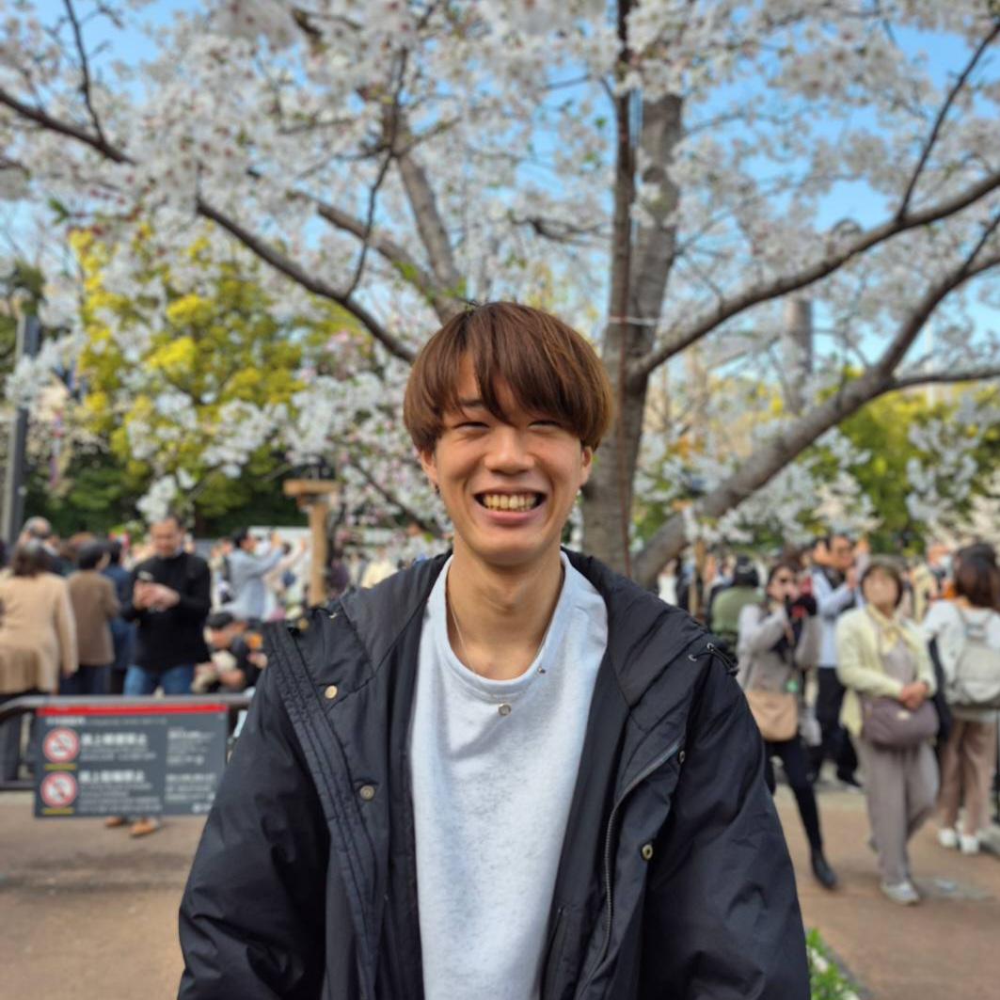

Graduate Student in Economics, University of Tokyo
Education
- M.A. in Economics, University of Tokyo, April 2025 – Present
- B.A. in Economics, University of Tokyo, April 2021 – March 2025
Research Interests
Game Theory, Information Economics, and Mechanism Design
Presentations
- Microeconomic Theory Workshop, University of Tokyo, Tokyo, Japan, January 2026.
- Asian School in Economic Theory (formerly Summer School of Econometric Society), Seoul, South Korea, August 2025.
- 7th World Congress of the Game Theory Society, Peking University, Beijing, China, August 2024.*
* Presented by a coauthor.
Honors, Scholarships, and Fellowships
- JSPS Research Fellowship for Young Scientists (DC1), Japan Society for the Promotion of Science, 2026 – 2028
- World-leading Innovative Graduate Study of Advanced Economics, University of Tokyo, 2025 – 2028
- Distinguished Undergraduate Thesis Award, Department of Economics, University of Tokyo, 2025
- Executive Director’s Award for Business Reform, University of Tokyo, 2024
Teaching Experience
Instructor
- Math Camp (Graduate), University of Tokyo, Spring 2026
Teaching Assistant
- Microeconomics I (Undergraduate), University of Tokyo, Fall 2026
- Game Theory (Undergraduate), University of Tokyo, Spring 2026
- Microeconomics I (Undergraduate), University of Tokyo, Fall 2025
- Microeconomics I (Graduate Core), University of Tokyo, Spring 2025